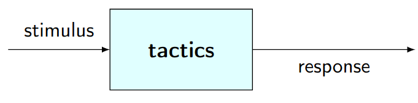
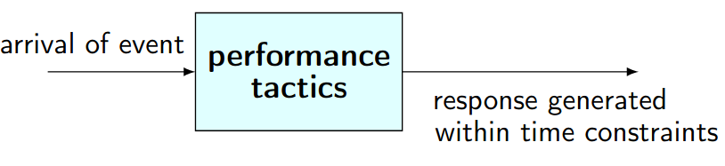

Teórica 09
Táticas de Design
- São utilizadas pelo arquiteto de software para criar um design;
- Conectam os requisitos de atributos de qualidade com decisões arquiteturais;
- São uma decisão de design que irá ter impacto sob atributos de qualidade específicos;

Tipos de Táticas
- Táticas de Disponibilidade;
- Táticas de Modificabilidade;
- Táticas de Desempenho;
- Táticas de Segurança;
- Táticas de Testabilidade;
- Táticas de Usabilidade.
Táticas de Disponibilidade
- Têm como alvo evitar que faltas se tornem falhas ou, pelo menos, reduzir os efeitos que uma falta poderá ter e repará-los o mais depressa possível;
- Muitas destas táticas estão disponíveis na execução standard dos sistemas;
- Todas as abordagem para endereçar disponibilidade involvem algum tipo de:
- Redundância;
- Monitorização para detetar falhas;
- Recuperação quando uma falha é detetada.
- A monitorização e a recuperação tanto podem ser processos automáticos, como processo manuais.
Deteção de Falhas
- Ping/echo: um componente manda um ping e espera receber um echo como resposta do componente a analisar;
- Heartbeat: um componente emite, de forma periódica, uma mensagem heartbeat e outro componente ouve-a;
- No caso de o heartbeat falhar, assume-se que o componente de origem falhou e o componente responsável pela correção de falhas é notificado.
- Exceptions: quando uma classe de falha é reconhecida lança-se uma Exception.
Recuperação de Falhas
- Voting: cada um dos processos a correr em processadores redundantes recebe o input e computaciona o output que envia a um voter;
- Algoritmos populares são as regras de maioria e o componente favorito;
- É utilizado para corrigir erros de operações de um algoritmo ou falhas de um processador.
- Active Redundancy: todos os componentes redundantes respondem aos eventos em paralelo;
- Apenas é considerada a resposta de 1 componente (geralmente, o primeiro a responder), sendo as restantes descartadas.
- Passive Redundancy: um componente (primário) responde ao eventos e informa os outros componentes (the standbys) do estado das atualizações que estes devem fazer.
- Quando uma falha ocorra, o sistem deverá, primeiramente, garantir que o estado de backup é suficiente recente antes de continuar os serviços.
Prevenção de Falhas
- Removal from Service: Remove um componente de operar em atividades que já se encontram a decorrer;
- Transactions: Agrupamento de múltiplos passos sequenciais que pode ser desfeito de uma vez;
- Usados para evitar que dados sejam afetados se um passo do processo falhar;
- Também evitam colisões de acesso a dados de múltiplas threads em simultâneo.
- Process Monitor: Sempre que uma falha num processo é detetada, o processo de monitorização pode apagar esse processo;
- Posteriormente, é necessário criar uma nova instância desse processo.
Táticas de Desempenho
Eventos
- Táticas de desempenho geram respostas a eventos do sistema num intervalo de tempo;
- O evento poderá ser singular ou uma stream e será o gatilho para um pedido de computação de desempenho,
- O sistema irá processar o evento e gerar uma resposta;
- As táticas de desempenho irão controlar o tempo em que a resposta é gerada;
- A latência é o tempo entre o evento e a geração da resposta ao evento.

Consumo de Recursos e Tempo de Bloqueio
- Quando um evento acontece, o sistema deverá processá-lo ou estará bloqueado por algum motivo;
- O consumo de recursos deve ser gerido;
- O acesso a secções críticas deve ser sequencial;
- Existem três categorias de táticas relacionadas com o desempenho:
- Demanda de recursos;
- Gestão de recursos;
- Recursos arbitrários.
Demanda de Recursos
- As streams de eventos são a fonte das demandas de recursos;
- Tem 2 aspetos principais:
- O tempo entre eventos numa stream de recursos;
- Quantos recursos é que são consumidos por cada pedido.
- Uma tática que permite diminuir a latência é a redução dos recursos necessários para processar uma stream;
- Deve ainda aumentar-se a eficiência computacional utilizando os algoritmos adequados, sendo que uma melhoria no algoritmo deverá diminuir a latência;
- Por vezes, um recursos pode ser trocado por outro;
- Deve reduzir o overhead computacional, uma vez que se não existir pedidos para um dado recurso, o processamento será também menor;
- A utilização de nós intermediários irá aumentar o número de recursos consumidos, pelo que a sua remoção diminuirá a latência;
- Por fim, outra táticas para reduzir a latência passa por reduzir o número de eventos a serem processados.
Gestão de Recursos
- Introdução de concorrência: se os processos puderem ser tratados de forma paralela, então o blocked time será reduzido;
- Devem manter-se múltiplas cópias, tanto dos dados, como das computações. Clientes num padrão cliente-servidor são réplicas da computação.
- Isto irá reduzir o nível de contenção, comparativamente ao caso em que todas as computações são executadas num servidor central;
- Para diminuir a contenção, poderá ainda utilizar-se caching, mas as cópias dos dados devem ser consistentes e estar sincronizadas.
- O aumento dos recursos disponíveis (introdução de novos processadores, de mais memória, de processadores mais rápidos, etc...) irá, muito provavelmente, reduzir a latência.